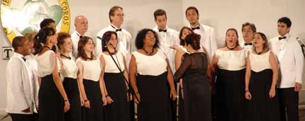

Actividad Coral Mundial
Desde Trelew, la Fundación “C.I.C.” forma parte de una red coral que recorre todos los continentes. Esta sección reunía —o iba a reunir— las novedades del movimiento coral internacional para los coros de la región.
Día Internacional del Canto Coral
Impulsado por la FIMC, se celebra cada año en torno al segundo domingo de diciembre con conciertos simultáneos en todo el mundo. La Fundación lo celebra anualmente con recitales especiales que unen a los elencos de la región.
Red de festivales
Como afiliada a la Choral Festival Network, la Fundación integra el circuito de festivales y certámenes corales reconocidos internacionalmente, lo que permite que coros de otros países conozcan el Certamen de Trelew y que los coros patagónicos lleguen a otros escenarios.
En el país
A través de la OFADAC —de la que es Miembro Fundador— y de ADICORA, la Fundación mantiene el vínculo con coros y directores de todo el territorio argentino.
2011: el mundo coral en la Patagonia
El punto más alto de este vínculo fue el Simposio Coral 2011.
